《Low-Level Programming》读书笔记（第 1-4 章）
无意间找到的一本好书，主要介绍 X86-64 体系下的 C 和汇编。其中第十二章关于“编程语言设计”部分的内容，以及第十三章关于“良好编码规范”的内容就简单略过了。
Chapter 1：计算机基础架构
- （Page：4）冯诺依曼体系：强健且易于编程。拥有一个 CPU 处理单元和内存单元，被连接到公用的总线上。CPU 内部分为控制单元（Control Unit）与算数逻辑单元（ALU）以进行逻辑控制和算数计算，而内存单元则用于存储数据。被编码的指令和数据均存放于内存中，内存按字节被分为一个个单元。指令以顺序的形式被依次执行除非特殊的 jump 指令被执行。
- （Page：5）内存状态和寄存器的值从程序员的视角描述了某一时刻的 CPU 状态。每一条机器指令都对应着不同的内存和寄存器状态。
- （Page：6）长模式：在 X86-64 处理器架构中，当处于长模式（Long Mode）时，64 位应用程序（或者是操作系统）可以使用 64 位指令和寄存器，而 32 位程序将以一种兼容子模式运行。不在长模式下运行时，处理器支持真实模式和保护模式两个子模式，在这两个模式下的 X86-64 处理器与 X86_32 处理器运行方式完全相同。
- （Page：6）Intel64 基于冯诺依曼的扩展：
- 寄存器：直接存在于 CPU 上的存储单元；由于不需要经由总线调度，因此存取速度很快，通常只需要几个 CPU 周期；
- 栈：即进程虚拟地址空间中的栈结构，rsp 寄存器指向栈顶位置。用于保存当前栈帧中使用的局部变量、参数等；
- 中断：可用于改变程序的执行顺序。常见的中断场景：外部设备的响应、运行时异常（除零）、无效指令、尝试以非特权模式执行特权指令等；
- 保护环（分级保护域）：一般只使用 ring0 和 ring3。ring0 可以执行所有的 CPU 指令。ring3 一般是用户应用程序所在的层级，只能使用最安全的 CPU 指令；另外的 ring1 \ ring2 一般不使用；
- 虚拟内存：一般指进程独立的虚拟地址空间（VAS）。可以隔离进程运行环境，并且借由分段、分页技术，可以很好地管理进程的内存使用；
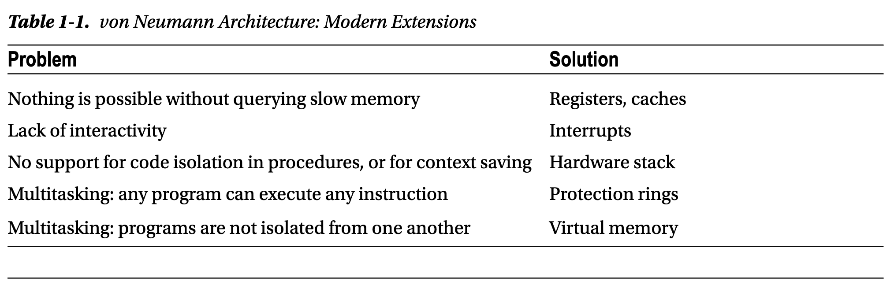
- （Page：8）程序访问的局部性：一个程序 80% 的执行时间花费在仅 20% 的代码中。分为时间局部性 —— 近期被访问的信息，可能在短时间内被访问，和空间局部性 —— 与被访问地址相邻的地址上信息可能会在短期内被再次访问。基本思想：对大概率事件赋予它优先的处理权和资源使用权，以获得全局的最优结果。
- （Page：9）X86-64 下的通用寄存器，即 “General Purpose Registers”（16 个 64 位的整型寄存器）：
- r0 (rax)：算术指令中使用的一种“累加器”。通常也作为系统调用的序号，以及返回值的容器；Accumulator；
- r1 (rcx)：用于循环控制；Cycle；
- r2 (rdx)：在输入/输出操作期间存储数据。通常也作为系统调用中参数传递寄存器（第三个参数）；Data；
- r3 (rbx)：基址寄存器，用于存放早期处理器模型中的基址；Base；
- r4 (rsp)：类似 i386 下的 esp，指向进程栈的栈顶；Stack；
- r5 (rbp)：类似 i386 下的 ebp，栈帧寄存器，默认指向旧的 rbp 的值；Stack Base；
- r6 (rsi)：字符串操作命令中的源索引；通常也作为系统调用中参数传递寄存器（第二个参数）；Source Index；
- r7 (rdi)：字符串操作命令中的目标索引；通常也作为系统调用中参数传递寄存器（第一个参数）；Destination Index；
- r8 - r15：通常用于存储临时变量；
- （Page：10）当使用通用寄存器名时，可以为其添加后缀，以寻址其一部分区域：
- d：即 double，寻址其低 32 位（如：r0d）；
- w：即 word，寻址其低 16 位（如：r3w）；
- b：即 byte，寻址其低 8 位（如：r7b）；
对于 r0-r7 我们一般使用其别名来表示；而 r8-r15 则直接使用数字索引的形式来表示。我们也可以通过别名来访问 r0-r7 的一部分区域，对于 rax / rbx / rcx / rdx 来说，有着统一规则的表达方式：
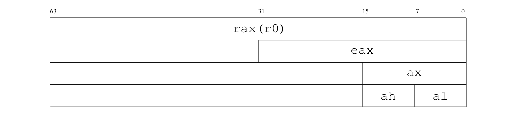
对于 rsi / rdi / rsp / rbp 来说，有着另外的表达方式（规则相同）：
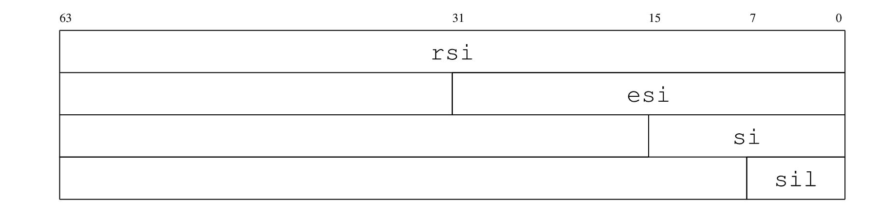
- （Page：12）rip 寄存器：程序员可以访问 rip 寄存器。它是一个 64 位寄存器，始终存储要执行的下一条指令的地址。分支指令会对其进行修改。因此，每次执行任何指令时，rip 都会存储下一条将要执行的指令地址。另一个可访问的寄存器称为 rflags：它存储着反映当前程序运行状态的标志。例如，最后一条算术指令的结果是是否是负数？是否发生了溢出？等。它的部分寻址为：eflags（低 32 位）和 flags（低 16 位）。其内部的标志位如下所示：
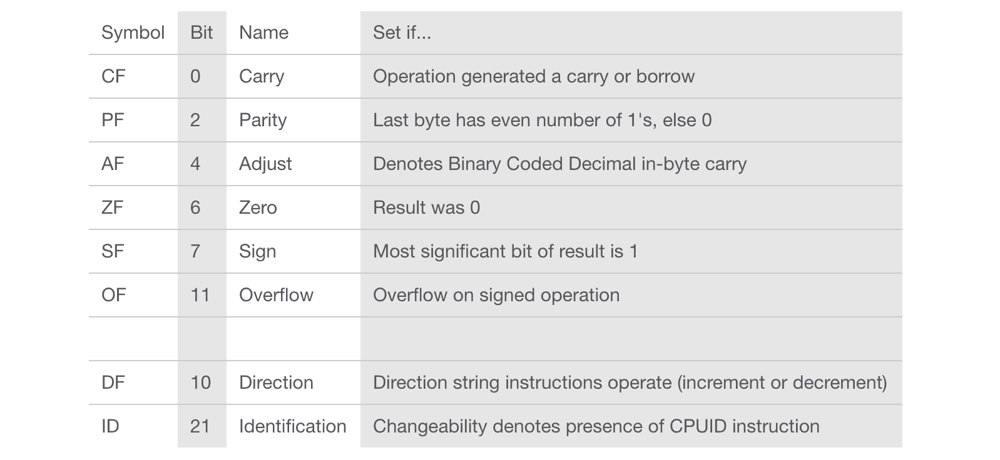
- （Page：12）xmm0 - xmm15 寄存器：用于进行 SIMD 以及浮点数运算。
- （Page：13）系统寄存器（被 OS 特殊使用）：
- cr0 / cr4：存储与不同处理器模式和虚拟内存有关的标志；
- cr2 / cr3：用于支持虚拟内存；
- cr8（tpr）：用于优化中断机制；
- efer：标志寄存器，用于控制 CPU 模式和扩展；
- idtr：存储中断描述表的地址；
- gdtr / ldtr：存储描述符表的地址；
- cs / ds / ss / es / gs / fs：段寄存器，主要用于实现分段机制，其中一部分仍用于实现特权模式；
在长模式下，当前保护环等级存储在寄存器 cs 的最低两位中，并且仅在处理中断或系统调用（需要进入内核模式）时才能更改。
- （Page：15）关于栈的说明：
- 没有“空栈”的概念。无论如何都可以从栈上 pop 一个值，但获得的值可能没有意义；
- 栈向低地址方向增长；
- 几乎所有类型的操作数都被视为带符号整数，因此会发生符号位扩展（有符号数扩展符号位，即 1；无符号数扩展 0）；
- 大多数支持栈的体系结构都使用相同的原理，即栈顶位置由某些寄存器定义，但不同之处在于各个地址的含义。在某些体系结构上，寄存器的值是下一个被推入元素的地址；在其他情况下，寄存器的值是已经被压入堆栈的最后一个元素的地址；
- （Page：16）PUSH 指令：
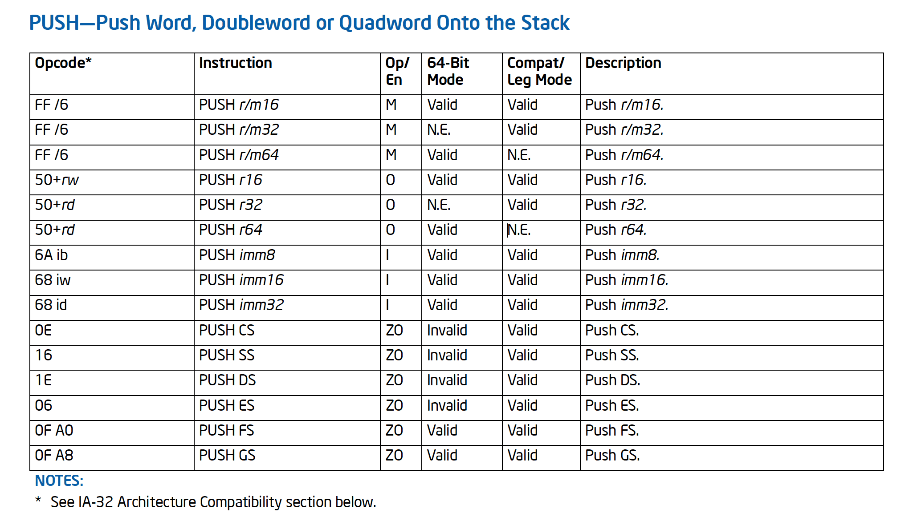
- push r/m16：将一个 16 位的寄存器的值或者从内存中取得的 16 位数字推入当前的栈中；
- push CS：将段寄存器 cs 的值推入栈中；
- push imm16：将 16 位的立即数推入栈中；
Chapter 2：汇编语言
- （Page：18）Unix 将一切资源均视为“文件”。从广义上讲，文件就是看起来像字节流的任何东西。
- （Page：19）通常来讲，汇编语言不区分大小写，但是标签名称（global _start）和段名称（section .data）区分大小写。
- （Page：19）伪指令（非真实的 X86-64 指令集指令）DB（Declaring Initialized Data）家族，用于定义以字节形式表示的初始化数据：
- db：bytes；
- dw：2bytes；
- dd：4bytes；
- dq：8bytes；
db 0x55 ; just the byte 0x55
db 0x55,0x56,0x57 ; three bytes in succession
db 'a',0x55 ; character constants are OK
db 'hello',13,10,'$' ; so are string constants
dw 0x1234 ; 0x34 0x12
dw 'a' ; 0x61 0x00 (it's just a number)
dw 'ab' ; 0x61 0x62 (character constant)
dw 'abc' ; 0x61 0x62 0x63 0x00 (string)
dd 0x12345678 ; 0x78 0x56 0x34 0x12
dd 1.234567e20 ; floating-point constant
dq 0x123456789abcdef0 ; eight byte constant
dq 1.234567e20 ; double-precision float - （Page：20）伪指令 TIMES，用于重复多次执行某指令：
global _start
section .text
_start:
mov rax, 1
mov rdi, 1 ; stdout;
mov rsi, message ; buffer;
mov rdx, 64 ; length;
syscall
mov rax, 60
xor rdi, rdi ; clean rdi and pass 0 to exit() system call;
syscall
section .rodata
message:
times 10 db 'ABC' ; message 符号的内容会成为一个整体；
times 64-$+message db '$' ; times 伪指令可以接受表达式作为第一个参数；$ 为特殊符号表示当前语句开头的汇编位置；$$ 表示当前段开头处的汇编位置；
db 10- （Page：20）X86-64 下系统调用的传参寄存器：rdi / rsi / rdx / r10 / r8 / r9；最多传递 6 个参数。
- （Page：22）一个通过“位移 sar”和“逻辑与 and”来输出数字值的例子：
section .data
codes:
db '0123456789ABCDEF' ; char symbols;
global _start
section .text
_start:
mov rax, 0x1122334455667788 ; 64bits;
mov rdi, 1 ; "stdout";
mov rdx, 1 ; length of chars to print;
mov rcx, 64 ; counter for 16 times iteration;
.loop:
push rax ; rax -> stack;
sub rcx, 4 ; rcx <- rcx - 4;
sar rax, cl ; (Shirt Arithmetic Right) rax >> (cl times);
and rax, 0xf ; for iteration turns > 0;
lea rsi, [codes + rax] ; (Load Effective Address) map to char*;
mov rax, 1 ; set system call to write();
push rcx ; save rcx;
syscall
pop rcx
pop rax
test rcx, rcx ; test if zero, will change SF, ZF, PF accordingly;
jnz .loop ; loop if not zero;
mov rax, 60 ; exit;
xor rdi, rdi
syscall- sar 为算数右移，会进行符号位扩展；shr 为逻辑右移，扩展为填充 0；
- .loop 为本地标签，隶属于某个全局标签之下（比如这里的 _start），因此其全名为 _start.loop，我们可以在整个程序中用这个名称进行索引；
lea rsi, [codes + rax]使用了间接寻址；
- （Page：24）lea 与 mov 的区别（大部分情况下 mov 操作的是值，lea 操作的是地址）：
- mov rsi, codes：codes 的地址存放到 rsi；
- mov rsi, [codes]：codes 地址开始的 8 字节内存内容存放到 rsi；
- les rsi, [codes]：codes 的地址存放到 rsi；
- mov rsi, [codes + rax]：codes + rax 地址开始的 8 字节内存内容存放到 rsi；
- lea rsi, [codes + rax]：codes 的地址加 rax 值存放到 rsi
- （Page：24）常用的跳转指令：
- 无条件跳转：jmp；
- 有条件跳转：jz / jnz / ja / jb / jg / jl / jae / jle（其中 ja / jb 用于 unsigned 数字，jg / jl 用于 signed 数字）；
其中条件跳转指令依赖于 rflags 寄存器的值，这些值会被诸如 test / cmp 等指令改变。
global _start
section .rodata
message:
db 'YHSPY', 10
section .text
_start:
mov rax, 1
cmp rax, 2
jl yes ; jump if rax is less than 2;
mov rbx, 0
jmp ex
yes:
mov rax, 1
mov rdi, 1
mov rsi, message
mov rdx, 6
syscall
mov rax, 60
xor rdi, rdi
syscall
ex:- （Page：25）函数调用指令 call 会自动将后续的函数返回地址压入栈中。其中用于传递参数（由于 syscall 指令会默认使用 rcx 来存放系统调用的返回地址，且用 r11 来存放 rflags 的值，因此系统调用的第四个参数为 r10 寄存器）的寄存器为：rdi \ rsi \ rdx \ rcx \ r8 \ r9；Callee-saved 寄存器 rbx \ rbp \ r12-r15 必须由被调用方保存状态，并在结束前重置（指如果在函数调用过程中被修改的话。其中 rsp 不推荐使用）；Caller-saved 寄存器的内容视情况保存和恢复。函数调用的返回值可以保持在 rax 与 rdx 中。
- （Page：26）函数调用的基本流程为：
- 保存所有希望在函数调用后保留的 Caller-saved 寄存器（push）；
- 存储函数参数到相关寄存器；
- 将多余的参数存入栈中；
- 使用指令 call 调用函数；
- 函数返回后，访问 rax / rbx 获得返回值；
- 重置第一步保存的 Caller-saved 寄存器（pop）；
一个简单的例子如下（inc 过程接受一个参数 1，然后把该值加 1，最后通过 print 过程调用系统调用将其打印出来）。
global _start
section .data
init:
db 0x1
section .rodata
codes:
db '0123456789abcdef'
section .text
inc:
mov rax, rdi ; read param from register (no need to clean stack);
add rax, 0x1
ret
print:
lea rsi, [codes + rax]
mov rax, 1
mov rdi, 1
mov rdx, 1
syscall
ret
_start:
mov rdi, [init] ; move the first 8 bytes of init to %rdi;
call inc
call print
mov rax, 60
xor rdi, rdi
syscall需要注意的是：一般与外部函数（如 C 标准库）的调用交互需要遵守对应 ABI 上的 Calling-Convention。比如 i386 下需要维护 ebp / esp；X86-64 下 rsp 在函数调用前需要满足的 16-byte 对齐条件等等。但对于内部函数的调用过程，则可以不完全满足调用规范。下面给出一个基于 AMD64 ABI，通过栈传参进行函数调用的改写后的例子，功能同上述汇编代码。
这里需要注意的是，在 X86-64 下一般可能会没有 rbp 指针的参与函数调用过程（可以减少函数调用前后执行的指令数量，并节省出一个通用寄存器），因此在函数调用时便不用保存旧的 rbp 寄存器的值。对应的，栈帧上在没有局部变量的情况下，rsp 默认会指向函数的返回地址，而 [rsp + 8] 便为函数调用前放入栈中的值。注：下图中的 “return address” 应该属于上一个栈帧的一部分（来自 CSAPP）。
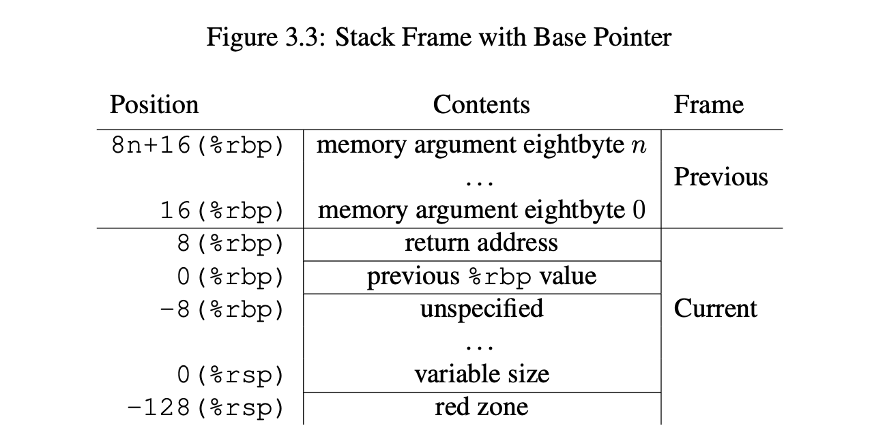
rsp 低地址方向预留的 128 Bytes 的 “Red Zone” 主要是针对栈帧的一种优化。该区域不会被信号或中断处理程序异步地破坏，因此可用于暂存数据，而不需要显式地移动 rsp 中的指针值。但 “Red Zone” 可以被调用函数破坏，因此在一般在“叶函数”中最常用（比如：GCC 在为叶函数中的局部变量分配内存时可以直接使用 “Red Zone” 而省去移动 rsp 的开销）。
global _start
section .data
init:
db 0x2
section .rodata
codes:
db '0123456789abcdef'
section .text
inc:
mov rax, [rsp] ; read param from the stack;
add rax, 0x1
ret
print:
lea rsi, [codes + rax]
mov rax, 1
mov rdi, 1
mov rdx, 1
syscall
ret
_start:
; enable AC check;
pushf
or dword [rsp], 1<<18
popf
mov rdi, [init] ; move the first 8 bytes of init to %rdi;
push rdi
call inc
add rsp, 0x8 ; clean stack by the caller;
call print
mov rax, 60
xor rdi, rdi
syscall- （Page：28）字节序：大端 —— 多字节数字从 MSB 开始存储在内存（从低向高）中；小端 —— 多字节数字从 LSB 开始存储在内存（从低向高）中。Intel64 遵循小端模式。小端模式的好处在于：当进行类型收窄时，在一定条件下不会影响原数据的存放位置。大端模式通常被用在 TCP/IP 封包以及 JVM 中。
- （Page：30）显式指定字符串值的长度：
db 27, 'Selling England by the Pound'- （Page：30）为字符串值添加 null-terminated（C 风格字符串）：
db 'Selling England by the Pound', 0- （Page：30）指定 .data 段中的数据宽度（操作数装饰）：
global _start
section .rodata
codes:
db '0123456789ABCDEF'
section .data
v:
dq 0
section .text
_start:
mov byte[v], 2
; mov word[v], 2 ; 立即数按照 word 大小存放（2 Bytes）；
; mov dword[v], 2 ; 立即数按照 dword 大小存放（4 Bytes）；
; mov qword[v], 2 ; 立即数按照 qword 大小存放（8 Bytes）；
mov rax, [v]
lea rsi, [codes + rax]
mov rax, 1
mov rdi, 1
mov rdx, 1
syscall
mov rax, 60
xor rdi, rdi
syscall- （Page：33）一个计算输入字符串长度的程序：
global _start
section .bss
input: resb 8 ; reserve 8 bytes;
section .text
strlen:
push rbx ; save callee-saved registers;
xor rbx, rbx
.loop:
cmp byte[input+rbx], 0 ; pay attention to the trailing '\n';
je .end
inc rbx
jmp .loop
.end:
mov rax, rbx
pop rbx ; restore callee-saved registers;
ret
_start:
mov rax, 0
mov rdi, 0
mov rsi, input
mov rdx, 8
syscall
call strlen
mov rdi, rax
mov rax, 60
syscall- resb 指令按“位”保留内存空间，resw 指令按“字”保留内存空间（在 .bss 中）；
- （Page：26）永远不要直接使用 rbp 和 rsp，它们在程序执行期间被 CPU 隐式使用（比如 call 指令在某些情况下会使用 rsp）。
- （Page：36）分别使用 r9d / r9w / r9b 来选取 r9 寄存器（其他 r8-r15 类似）的一部分数据。
- （Page：38）带有 displacement 和 offset 的地址表示结构：[base + scale * offset + displacement]。其中 displacement 必须是立即数，scale 的可选值为: 1 / 2 / 4 / 8。
mov rax, [rdx + 8 * rcx + 42]Chapter 3：传统处理器模式
- （Page：39）CPU 处理器可以以下列方式之一运行：
- 实模式：最古老的 16 位模式（缺点：同一个地址空间被多个程序共享、程序直接没有隔离，可以互相修改、程序可以执行任何 CPU 指令）；
- 保护模式：通常称为 32 位模式（Intel 80386 第一个支持）；
- 虚拟模式：在保护模式下模拟实模式；
- 系统管理模式：用于睡眠模式、电源管理等；
- 长模式：64 位应用程序（或者是操作系统）可以使用 64 位指令和寄存器，而 32 位程序将以一种兼容子模式运行；
保护模式中使用的 GDT（关于保护模式的原理暂时略过，可以参考操作系统相关书籍）：
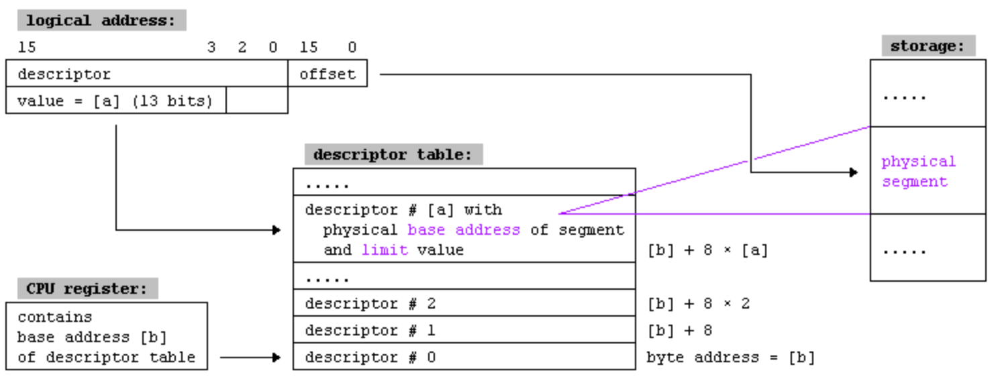
- （Page：45）对大于等于 32 位寄存器（rax / eax）的修改会影响整个寄存器的值布局，即：即使只修改低 32 位也会丢弃原有高 32 位的数据。Intel64 是 CISC 指令集，这些指令会被解码并转换为更简单的微码指令流，同时进行各类优化，比如多流水线并行。而如果修改 eax 意味着保持 rax 的高位不变，那么它将在当前指令与之前修改过 rax 或其部分之间的指令之间引入额外的依赖关系。而这种依赖关系会影响指令并行流水线的高性能执行条件，甚至在某些情况下会降低性能。
Chapter 4：虚拟内存
- （Page：47）CPU 至少拥有一个指令缓存来减少处理器访问内存的平均时间；以及一个 TLB（Translation Lookaside Buffer）来提高虚拟内存的访问性能。缓存的有效性来源于程序运行时对内存的访问呈现局部性（Locality）。
- （Page：49）虚拟地址（Virtual Address）又被称为“逻辑地址”，而 MMU 部件可用于将虚拟地址转换为物理地址。
- （Page：49）Linux 使用“信号”机制来通知应用程序有关的异常信息。比如当访问一块被禁止的内存区域时，OS 会发出一个 SIGSEGV 信号（Segment Fault）给应用程序，而应用程序则可以通过设置相应的 Handler 函数来处理这些信号。
- （Page：50）常用的页置换（物理内存 <-> Swap）策略：
- “最近最少使用” — LRU；
- “先进先出” — FIFO；
- “随机页选择”算法；
- （Page：51）Linux 下查看进程的虚拟地址空间分布（基于 procfs — 一个用于描述进程信息的虚拟文件系统）：
cat /proc/<pid>/maps* 逻辑内存中装载的映像（包括 ELF 可执行文件/共享库中的各个 Segment）均以 4KB（0x1000 Bytes）为页单位进行对齐。
- （Page：52）使用较少内存的程序可以运行的更快，因为所产生较少的“页错误”可以减少磁盘空间与物理内存之间的数据转移次数。
- （Page：53）一个虚拟地址的组成结构：
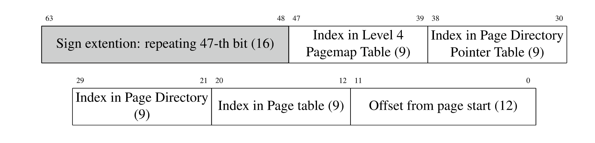
在当前的 X86-64 体系中，虚拟地址本身其实只有 48 Bits 大小，即从第 0-47 位，剩下的高 16 位会通过符号扩展（高 17 位相等）进行填充。这种类型的地址被称为 “canonical-address”。通过使用这种方式，OS 可以平滑兼容以后真正的 52、56 甚至 64 位虚拟内存。当试图访问一个不符合 canonical-address 规范的内存地址时，OS 可能会返回类似 “Bus error” 的错误。
- （Page：54）虚拟地址到物理地址的映射要经过多个表查询和间接跳转过程：
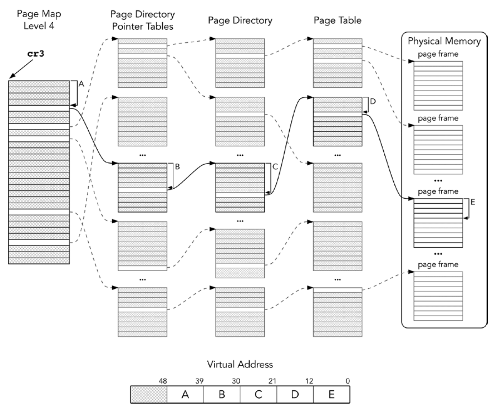
- 虚拟地址中只存放了在各个表中的相对偏移信息，而当前表的表项地址信息则由前一个表的表项值提供。最初的 “Page Map Level 4（PML4）” 表的起始地址由 cr3 系统寄存器提供。接下来，利用 cr3 的值与虚拟地址第 47:39 位的信息来组成 PML4 目标表项的地址。而该地址的一部分内容将构成下一个 “Page Directory Pointer Tables” 表项物理地址的一部分；
- 物理内存部分被分为多个 “Page Frame”，每个大小为正好的 4 KB。同样的，每个中间表的大小也为 4 KB，每个表项大小为 64 Bits，即每个表可容纳 512 个表项；
- 对于在长模式中的 X86-64 处理器，PAE 是必须启用的；
- （Page：55）分页表（Page Table）：操作系统在分页表中存储部分虚拟地址到物理地址的映射。每个映射被称为分页表项（PTE, Page Table Entry）。从虚拟地址到分页表项的查询过程经历了上述 “PM4“ 等表查询过程。分页表中含有构成最终 “Page Frame” 物理地址的一部分信息，而这部分信息便可以由 TLB 进行缓存。
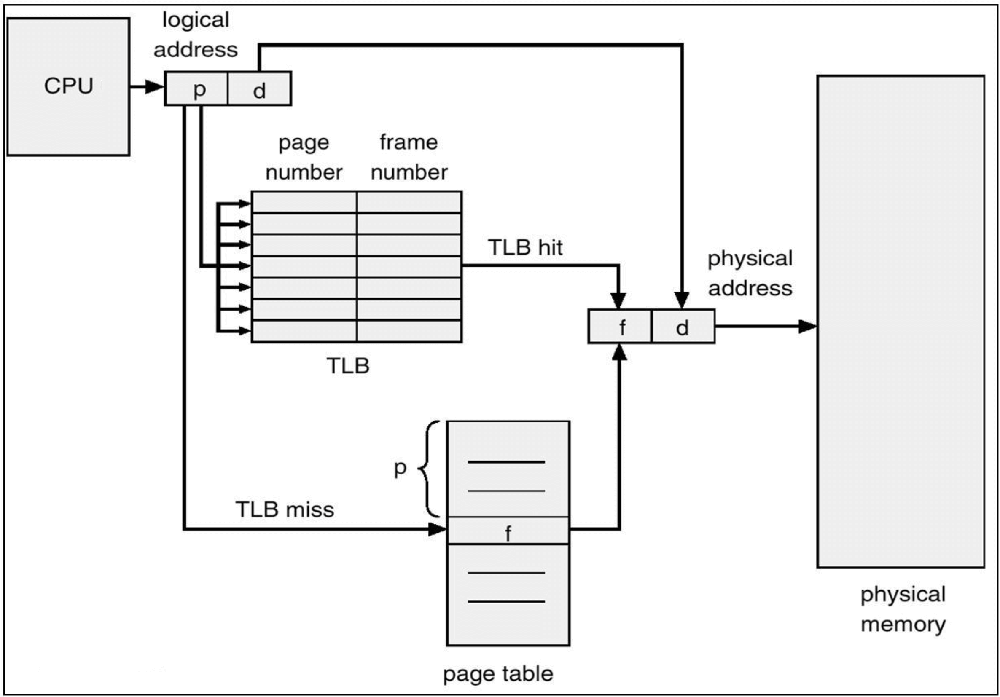
* 给到一个虚拟地址，OS 会首先查询 TLB 中是否有需要的物理地址信息，若没有则重新走多级的表查询流程，最后同时更新 TLB 中的对应表项。
作为获得虚拟地址对应物理地址的最后一步，分页表中还记录了对应 PTE 的一些权限信息，比如是否可写（W）、是否可访问（U）以及是否可执行（EXB/NX）等。其中还有最重要的，可以通过引发 “页错误” 来加载实际物理内存数据的 P 字段。* 其中 EXB/NX 可以配合 DEP 技术来防止注入到 .data 段或栈上的恶意代码被执行。
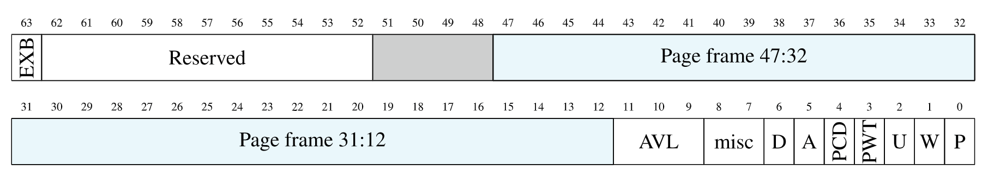
- （Page：57）在 NASM 中定义和使用常量：
%define directive
%define NAME 42- （Page：59）一个小示例：使用 mmap() 系统调用加载一个 ELF 可执行文件中的代码段（.text）到当前进程的 VAS，然后执行其中的代码。
植入文件代码（malicious）：
global _start
section .text
_start:
mov rsi, 0x400000 ; read from the start;
mov rax, 1
mov rdi, 1
mov rdx, 100
syscall
mov rax, 60
xor rdi, rdi
syscall执行文件代码：
%define O_PRONLY 0
%define MAP_SHARED 0x1
%define PROT_READ 0x1
%define PROT_EXEC 0x4
global _start
section .data
fname:
db 'malicious', 0
section .text
_start:
; open;
mov rax, 2 ; open;
mov rdi, fname
mov rsi, O_PRONLY
mov rdx, 0
syscall
; mmap;
mov r8, rax ; fd -> rax;
mov rax, 9 ; system call id;
mov rdi, 0 ; let system choose start;
mov rsi, 0x1000 ; region size;
mov rdx, PROT_READ | PROT_EXEC
mov r10, MAP_SHARED
mov r9, 0x1000 ; init offset -> .text;
syscall
; call of foreign code;
call rax
; exit;
mov rax, 60
xor rdi, rdi
syscall